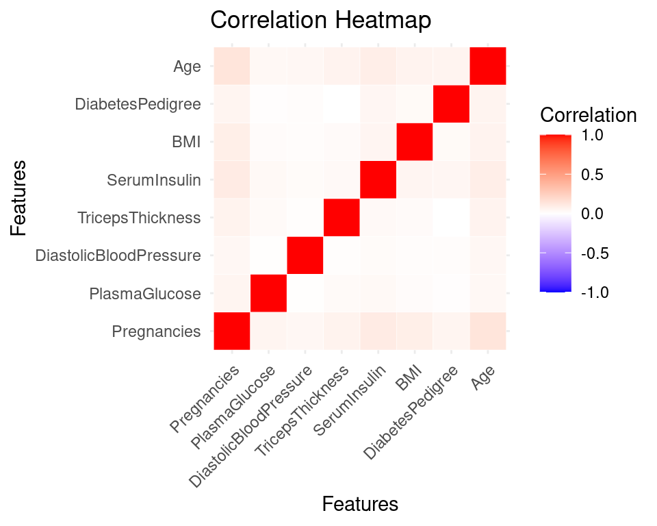
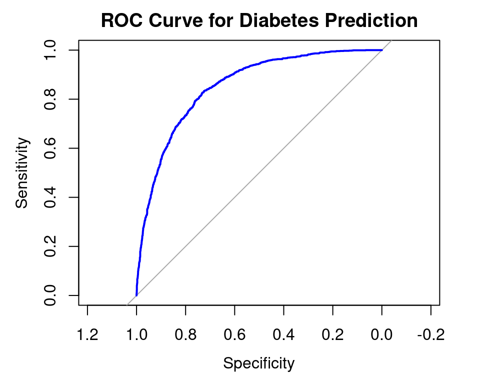

Predicting Diabetes Using Logistic Regression in R
Final Project for Geo 511
Author
Faithwin Gbadamosi
Published
November 10, 2024
Introduction
The disease “Diabetes Mellitus” is one of the most common critical diseases in the world. According to the World Health Organization (WHO), approximately 422 million people worldwide currently live with diabetes, with the majority residing in low- and middle-income countries (World Health Organization, 2023). The disease is characterized by elevated levels of blood glucose (or blood sugar), which leads over time to serious damage to the heart, blood vessels, eyes, kidneys and nerves.
For people at risk of diabetes, healthcare professionals have stressed the value of routine tests, emphasizing the necessity of early detection and intervention (Pranto eta al., 2020). In addition to diabetes care, prevention is essential. Prediction of diabetes from the onset can help healthcare providers take early preventive measures (Talukder et al., 2024).
This project aims to build a predictive model for diabetes using readily available patient data and key variables, such as pregnancies, glucose levels, BMI, and genetic factors. In addition, I will create visual summaries to communicate the insights and patterns identified in the data. The major objectives include:
Collecting and cleaning the diabetes dataset with relevant health variables.
Applying machine learning algorithm (logistic regression) to predict diabetes cases.
Creating visual summaries to show the relationships between key variables.
Materials and methods
The Data
The dataset used in this project was found in a study by Chou et al., (2023). The outpatient examination data of a Taipei Municipal medical center was taken as the patient population and 15,000 women aged between 20 and 80 were selected as the samples. The women were patients who had gone to the hospital between 2018 and 2020 and between 2021 and 2022 and may or may not have been diagnosed with diabetes.
The dataset contains the following variables:
1. Pregnancies: Number of times pregnant
2. PlasmaGlucose: two hours following an oral glucose tolerance test, plasma glucose concentration
6. BMI: Body mass index (weight in kg/(height in m)^2)
7. DiabetesPedigree: a numerical estimate of an individual’s genetic risk for developing diabetes based on family history. A higher score indicates a greater likelihood of developing the condition.
8. Age: Age (years)
9. Diabetic Outcome: Class variable (0 or 1) with the class value 1 representing those who tested positive for diabetes.
The following package(s) will be installed:
- corrplot [0.95]
These packages will be installed into "~/work/Faithwinn_Final_Project/Faithwinn_Final_Project/renv/library/linux-ubuntu-jammy/R-4.4/x86_64-pc-linux-gnu".
# Installing packages --------------------------------------------------------
- Installing corrplot ... OK [linked from cache]
Successfully installed 1 package in 8 milliseconds.
install.packages("caret")
The following package(s) will be installed:
- caret [6.0-94]
These packages will be installed into "~/work/Faithwinn_Final_Project/Faithwinn_Final_Project/renv/library/linux-ubuntu-jammy/R-4.4/x86_64-pc-linux-gnu".
# Installing packages --------------------------------------------------------
- Installing caret ... OK [linked from cache]
Successfully installed 1 package in 7 milliseconds.
install.packages("kableExtra")
The following package(s) will be installed:
- kableExtra [1.4.0]
These packages will be installed into "~/work/Faithwinn_Final_Project/Faithwinn_Final_Project/renv/library/linux-ubuntu-jammy/R-4.4/x86_64-pc-linux-gnu".
# Installing packages --------------------------------------------------------
- Installing kableExtra ... OK [linked from cache]
Successfully installed 1 package in 7 milliseconds.
library(tidyverse)library(leaflet)library(kableExtra)library(htmlwidgets)library(widgetframe)library(dplyr)library(tidyr)library(forcats)library(ggplot2)library(class)library(corrplot)library(caret)library(reshape2) #for melt functionlibrary(rmarkdown) library(knitr)knitr::opts_chunk$set(widgetframe_widgets_dir ='widgets' ) knitr::opts_chunk$set(cache=TRUE) # cache the results for quick compiling
diabetes_data%>%slice(1:10) %>%#show only 1:n rowskable(digits=2,align="c")%>%#make table and round to two digitskable_styling(bootstrap_options =c("striped", "hover", "condensed", "responsive"))
PatientID
Pregnancies
PlasmaGlucose
DiastolicBloodPressure
TricepsThickness
SerumInsulin
BMI
DiabetesPedigree
Age
Diabetic
1354778
0
171
80
34
23
43.51
1.21
21
0
1147438
8
92
93
47
36
21.24
0.16
23
0
1640031
7
115
47
52
35
41.51
0.08
23
0
1883350
9
103
78
25
304
29.58
1.28
43
1
1424119
1
85
59
27
35
42.60
0.55
22
0
1619297
0
82
92
9
253
19.72
0.10
26
0
1660149
0
133
47
19
227
21.94
0.17
21
0
1458769
0
67
87
43
36
18.28
0.24
26
0
1201647
8
80
95
33
24
26.62
0.44
53
1
1403912
1
72
31
40
42
36.89
0.10
26
0
#Exploring the structure of the datastr(diabetes_data)
The dataset contains 15000 patient entries, with all features being numeric values.
Clean Dataset
duplicated(diabetes_data) #check for duplicatessum(is.na(diabetes_data)) #to check missing values
The dataset contains no duplicates or missing values. The next step is visual summary.
Data Visualization and Exploratory Analysis
Correlation and visual summary
#remove patientid and outcome for better analysis filtered_diabetes <-subset(diabetes_data, select =-c(PatientID,Diabetic))correlation_matrix <-cor(filtered_diabetes)# Convert correlation matrix from wide to long format for easier analysiscorrelation_melted <-melt(correlation_matrix)#see the outcomecorrelation_melted%>%kable(digits=8,align="c")%>%#make table and round to two digitskable_styling(bootstrap_options =c("striped", "hover", "condensed", "responsive", fixed_thead =TRUE))%>%scroll_box(width ="100%", height ="400px") #scroll option long table
Var1
Var2
value
Pregnancies
Pregnancies
1.00000000
PlasmaGlucose
Pregnancies
0.05450238
DiastolicBloodPressure
Pregnancies
0.04352845
TricepsThickness
Pregnancies
0.06360454
SerumInsulin
Pregnancies
0.10448699
BMI
Pregnancies
0.08638610
DiabetesPedigree
Pregnancies
0.05424006
Age
Pregnancies
0.13697248
Pregnancies
PlasmaGlucose
0.05450238
PlasmaGlucose
PlasmaGlucose
1.00000000
DiastolicBloodPressure
PlasmaGlucose
0.00721196
TricepsThickness
PlasmaGlucose
0.02709960
SerumInsulin
PlasmaGlucose
0.03354493
BMI
PlasmaGlucose
0.02065333
DiabetesPedigree
PlasmaGlucose
0.00905733
Age
PlasmaGlucose
0.03886361
Pregnancies
DiastolicBloodPressure
0.04352845
PlasmaGlucose
DiastolicBloodPressure
0.00721196
DiastolicBloodPressure
DiastolicBloodPressure
1.00000000
TricepsThickness
DiastolicBloodPressure
0.01110606
SerumInsulin
DiastolicBloodPressure
0.02264855
BMI
DiastolicBloodPressure
0.01587319
DiabetesPedigree
DiastolicBloodPressure
0.01409873
Age
DiastolicBloodPressure
0.04133254
Pregnancies
TricepsThickness
0.06360454
PlasmaGlucose
TricepsThickness
0.02709960
DiastolicBloodPressure
TricepsThickness
0.01110606
TricepsThickness
TricepsThickness
1.00000000
SerumInsulin
TricepsThickness
0.02968762
BMI
TricepsThickness
0.02474548
DiabetesPedigree
TricepsThickness
-0.00095109
Age
TricepsThickness
0.06138287
Pregnancies
SerumInsulin
0.10448699
PlasmaGlucose
SerumInsulin
0.03354493
DiastolicBloodPressure
SerumInsulin
0.02264855
TricepsThickness
SerumInsulin
0.02968762
SerumInsulin
SerumInsulin
1.00000000
BMI
SerumInsulin
0.05122315
DiabetesPedigree
SerumInsulin
0.04632376
Age
SerumInsulin
0.08800683
Pregnancies
BMI
0.08638610
PlasmaGlucose
BMI
0.02065333
DiastolicBloodPressure
BMI
0.01587319
TricepsThickness
BMI
0.02474548
SerumInsulin
BMI
0.05122315
BMI
BMI
1.00000000
DiabetesPedigree
BMI
0.02886835
Age
BMI
0.06290975
Pregnancies
DiabetesPedigree
0.05424006
PlasmaGlucose
DiabetesPedigree
0.00905733
DiastolicBloodPressure
DiabetesPedigree
0.01409873
TricepsThickness
DiabetesPedigree
-0.00095109
SerumInsulin
DiabetesPedigree
0.04632376
BMI
DiabetesPedigree
0.02886835
DiabetesPedigree
DiabetesPedigree
1.00000000
Age
DiabetesPedigree
0.05563319
Pregnancies
Age
0.13697248
PlasmaGlucose
Age
0.03886361
DiastolicBloodPressure
Age
0.04133254
TricepsThickness
Age
0.06138287
SerumInsulin
Age
0.08800683
BMI
Age
0.06290975
DiabetesPedigree
Age
0.05563319
Age
Age
1.00000000
Plot correlation heatmap
# Plot heatmapggplot(correlation_melted, aes(Var1, Var2, fill=value)) +geom_tile(color="white") +scale_fill_gradient2(low="blue", high="red", mid="white", midpoint=0, limit=c(-1,1), space ="Lab", name="Correlation") +theme_minimal() +theme(axis.text.x =element_text(angle =45, hjust =1)) +#so the xlabs are not scrunched togetherlabs(title="Correlation Heatmap", x="Features", y="Features")

Correlation HeatMap
The correlation shows moderately positive correlations between the Age and Pregnancy, and the Insulin and Pregnancy. This indicates that as the age of the patients increased so did the number of pregnancies, also as the number of pregnancies, the quantity of insulin administered to the patients increased likewise.
Weak or no correlations can also be observed in the following attributes of the dataset; DiabetesPedigree and Skin Thickness.
Comparing Outcomes and Variables
Age vs Outcome
ggplot(data = diabetes_data, aes(x = Age)) +geom_histogram(color ="blue", fill ="lightblue") +facet_wrap(~Diabetic) +theme_dark() +ylab("Number of Patients") +labs(title ="Age(s) of Patients")
`stat_bin()` using `bins = 30`. Pick better value with `binwidth`.
Graph Showing Correlation of Outcome vs Age
0 = Non-diabetic
1= Diabetic
The ages of the patients are skewed to the right with most of the patients being between the ages of 20 to 40.
BMI vs Outcome
ggplot(data = diabetes_data, aes(x = BMI)) +geom_histogram(color ="blue", fill ="lightblue") +facet_wrap(~Diabetic) +theme_dark() +ylab("Number of Patients") +labs(title ="BMI of Patients")
`stat_bin()` using `bins = 30`. Pick better value with `binwidth`.
Plot Showing Correlation Between Outcome vs BMI
Blood Pressure vs Outcome
ggplot(diabetes_data, aes(x =factor(Diabetic), y = DiastolicBloodPressure, fill =factor(Diabetic))) +geom_boxplot() +labs(title ="Patients' Blood Pressure", x ="Diabetes Status", fill ="Diabetes Status" ) +scale_fill_discrete(labels =c("Non-Diabetic", "Diabetic")) +theme_dark()
Boxplot Showing Correlation Between Outcome vs BloodPressure
Visualizing the distribution of blood pressure for each outcome.
Preprocess and Train Data
Preprocess
# Step 1: Convert the outcome variable to a factor diabetes_data$Diabetic <-factor(diabetes_data$Diabetic, levels =c(0, 1), labels =c("Non-Diabetic", "Diabetic"))
# Step 2: Split the data into training and testing setsset.seed(123) # for reproducibilitysplit <-createDataPartition(diabetes_data$Diabetic, p =0.7, list =FALSE)train_data <- diabetes_data[split, ]test_data <- diabetes_data[-split, ]# Step 3: Fit the logistic regression modeldiabetes_model <-glm(Diabetic ~ Pregnancies + PlasmaGlucose + DiastolicBloodPressure + TricepsThickness + SerumInsulin + BMI + DiabetesPedigree + Age,data = train_data, family = binomial)# Step 4: Summarize the model to see coefficients and other detailssummary(diabetes_model)
Call:
glm(formula = Diabetic ~ Pregnancies + PlasmaGlucose + DiastolicBloodPressure +
TricepsThickness + SerumInsulin + BMI + DiabetesPedigree +
Age, family = binomial, data = train_data)
Coefficients:
Estimate Std. Error z value Pr(>|z|)
(Intercept) -8.7112122 0.2194791 -39.690 < 2e-16 ***
Pregnancies 0.2698705 0.0080060 33.709 < 2e-16 ***
PlasmaGlucose 0.0096941 0.0008234 11.773 < 2e-16 ***
DiastolicBloodPressure 0.0121392 0.0015853 7.657 1.9e-14 ***
TricepsThickness 0.0226795 0.0018192 12.467 < 2e-16 ***
SerumInsulin 0.0039586 0.0001944 20.367 < 2e-16 ***
BMI 0.0486785 0.0027794 17.514 < 2e-16 ***
DiabetesPedigree 1.0392443 0.0670211 15.506 < 2e-16 ***
Age 0.0590712 0.0020860 28.318 < 2e-16 ***
---
Signif. codes: 0 '***' 0.001 '**' 0.01 '*' 0.05 '.' 0.1 ' ' 1
(Dispersion parameter for binomial family taken to be 1)
Null deviance: 13366.8 on 10499 degrees of freedom
Residual deviance: 9151.1 on 10491 degrees of freedom
AIC: 9169.1
Number of Fisher Scoring iterations: 5
Train Model
# Generate predictions on the test settest_data$predicted_prob <-predict(diabetes_model, newdata = test_data, type ="response")test_data$predicted_class <-factor(ifelse(test_data$predicted_prob >0.5, "Diabetic", "Non-Diabetic"),levels =c("Non-Diabetic", "Diabetic"))# Create confusion matrixconfusion_matrix <-confusionMatrix(data = test_data$predicted_class,reference = test_data$Diabetic,positive ="Diabetic")# Print confusion matrix and statisticsprint(confusion_matrix)
Confusion Matrix and Statistics
Reference
Prediction Non-Diabetic Diabetic
Non-Diabetic 2671 627
Diabetic 329 873
Accuracy : 0.7876
95% CI : (0.7753, 0.7994)
No Information Rate : 0.6667
P-Value [Acc > NIR] : < 2.2e-16
Kappa : 0.497
Mcnemar's Test P-Value : < 2.2e-16
Sensitivity : 0.5820
Specificity : 0.8903
Pos Pred Value : 0.7263
Neg Pred Value : 0.8099
Prevalence : 0.3333
Detection Rate : 0.1940
Detection Prevalence : 0.2671
Balanced Accuracy : 0.7362
'Positive' Class : Diabetic
Case Study
Predicting diabetes for a new patient named Molly_Jane.
# Define the new patient's data for predictionMolly_Jane <-data.frame(Pregnancies =2,PlasmaGlucose =120,DiastolicBloodPressure =70,TricepsThickness =30,SerumInsulin =85,BMI =28.5,DiabetesPedigree =0.627,Age =45)# Use the model to predict the probability for the new patientprediction_prob <-predict(diabetes_model, newdata = Molly_Jane, type ="response")# Convert probability to class prediction with explicit labelingprediction_class <-ifelse(prediction_prob >0.5, "Diabetic", "Non-Diabetic")# Print the results with formatted probability and text labelcat("Predicted probability of diabetes:", round(prediction_prob, 3), "\n")#rounded to 3 decimal points
Predicted probability of diabetes: 0.391
cat("Predicted class for the new patient:", prediction_class)
Predicted class for the new patient: Non-Diabetic
With a probability of 39.1 %, Molly_Jane is classified as Non-Diabetic.
ROC Curve
library(pROC)
Type 'citation("pROC")' for a citation.
Attaching package: 'pROC'
The following objects are masked from 'package:stats':
cov, smooth, var
plot(roc_curve, col ="blue", main ="ROC Curve for Diabetes Prediction")

Model’s ROC Curve
The Receiver’s Operating Characteristic (ROC) shows the overall performance of the model is good. With an AUC (Area Under the Curve) of about 0.8 or higher, the model will be about 80% of the time accurate in predicting if a patient is diabetic or non-diabetic.
Conclusions
[~200 words]
Clear summary adequately describing the results and putting them in context. Discussion of further questions and ways to continue investigation.
References
Chou C-Y, Hsu D-Y, Chou C-H. Predicting the Onset of Diabetes with Machine Learning Methods. Journal of Personalized Medicine. 2023; 13(3):406. https://doi.org/10.3390/jpm13030406
Pranto B, Mehnaz S, Mahid EB et al. Evaluating machine learning methods for predicting diabetes among female patients in bangladesh. Information 2020; 11: 374.
Talukder MdA, Islam MdM, Uddin MA, et al. Toward reliable diabetes prediction: Innovations in data engineering and machine learning applications. DIGITAL HEALTH. 2024;10. doi:10.1177/20552076241271867
Tamunoye Darego (2022) Diabetes Prediction using kNN in R
Xavier Robin, Natacha Turck, Alexandre Hainard, Natalia Tiberti, Frédérique Lisacek, Jean-Charles Sanchez and Markus Müller (2011). “pROC: an open-source package for R and S+ to analyze and compare ROC curves”. BMC Bioinformatics, 12, p. 77. DOI: doi: 10.1186/1471-2105-12-77